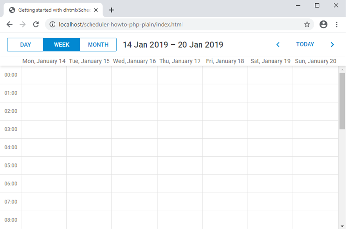
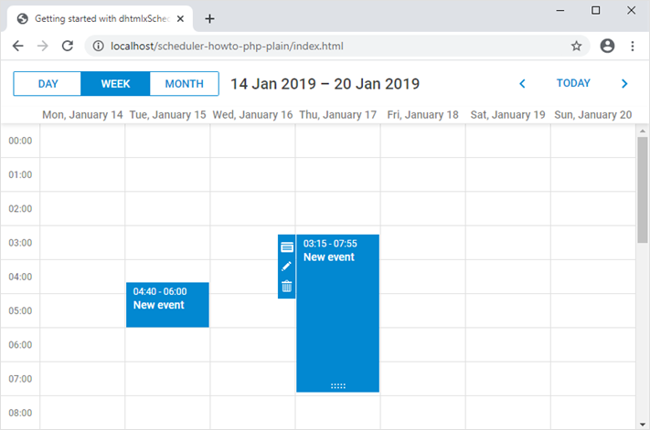

In this tutorial you will find necessary information on how to create a Scheduler using PHP without any frameworks.
We'll use MySQL as a data storage and PDO interface for the data access. The prerequisites to create a Scheduler are PHP 5.4 or above with PDO_MYSQL extension enabled and MySQL or MariaDB.
There are tutorials intended for building server-side integration with the help of other platforms and frameworks:
You can have a look at the ready demo on GitHub. Follow the step-by-step guide to create such an application.
The complete source code is available on GitHub.
We should start with preparing a new directory for your application.
Let’s create an empty project folder and name it scheduler-howto-php-plain.
Now we need to create a page with our scheduler.
Create an index.html file in the scheduler-howto-php-plain folder and fill it with the following content:
scheduler-howto-php-plain/index.html
<!doctype html>
<html>
<head>
<title> Getting started with dhtmlxScheduler</title>
<meta charset="utf-8">
<script src="https://cdn.dhtmlx.com/scheduler/edge/dhtmlxscheduler.js"></script>
<link href="https://cdn.dhtmlx.com/scheduler/edge/dhtmlxscheduler_material.css"
rel="stylesheet" type="text/css" charset="utf-8">
<style> html, body{
margin:0px;
padding:0px;
height:100%;
overflow:hidden;
}
</style>
</head>
<body>
<div id="scheduler_here" class="dhx_cal_container" style='width:100%; height:100%;'>
<div class="dhx_cal_navline">
<div class="dhx_cal_prev_button"> </div>
<div class="dhx_cal_next_button"> </div>
<div class="dhx_cal_today_button"></div>
<div class="dhx_cal_date"></div>
<div class="dhx_cal_tab" name="day_tab"></div>
<div class="dhx_cal_tab" name="week_tab"></div>
<div class="dhx_cal_tab" name="month_tab"></div>
</div>
<div class="dhx_cal_header"></div>
<div class="dhx_cal_data"></div>
</div>
<script> scheduler.init('scheduler_here', new Date(2019,0,20), "week");
scheduler.load("data/api.php");
var dp = new dataProcessor("data/api.php");
dp.init(scheduler);
dp.setTransactionMode("JSON"); // use to transfer data with JSON
</script>
</body>
</html>
Now you can run the app to see that a scheduler is rendered on a page:

So, you've got an empty scheduler. It's time to create a database and connect it to our app.
You can create a database from your favorite mysql-client (for example, phpMyAdmin), or via the console. Here is SQL to create a new database with a table for calendar events:
CREATE DATABASE IF NOT EXISTS `scheduler_howto_php`;
USE `scheduler_howto_php`;
DROP TABLE IF EXISTS `events`;
CREATE TABLE `events` (
`id` int(11) AUTO_INCREMENT,
`start_date` datetime NOT NULL,
`end_date` datetime NOT NULL,
`text` varchar(255) DEFAULT NULL,
PRIMARY KEY (`id`)
) DEFAULT CHARSET=utf8;
To import via a mysql-console, create a dump.sql file with the code above. And execute the command below in the shell:
$ mysql -uuser -ppass scheduler < mysql_dump.sql
After creating the database, we need to populate scheduler with actual data.
Let’s create a new folder called data in the project folder.
At first, define database connection parameters in the configuration data/config.php file:
data/config.php
<?php
$dsn = "mysql:host=localhost;dbname=scheduler_howto_php";
$username = "root";
$password = "";
$options = array(
PDO::MYSQL_ATTR_INIT_COMMAND => "SET NAMES 'utf8'",
PDO::ATTR_ERRMODE => PDO::ERRMODE_EXCEPTION,
PDO::ATTR_DEFAULT_FETCH_MODE => PDO::FETCH_ASSOC,
);
You need to replace “localhost”, “scheduler_howto_php”, “root”, “” with your own settings.
It’s time to add a php script that will be called from the client side for loading data from the database or saving scheduler changes back to the database.
Create a new file named api.php in the data folder and add the following code to create and open a connection:
data/api.php
<?php
require_once("config.php");
$db = new PDO($dsn, $username, $password, $options);
Then, we can implement a function that takes the connection and reads the scheduler data from the database:
data/api.php
function read($db, $requestParams){
$queryParams = [];
$queryText = "SELECT * FROM `events`";
$query = $db->prepare($queryText);
$query->execute($queryParams);
$events = $query->fetchAll();
return $events;
}
After that, we can create our request handler:
data/api.php
switch ($_SERVER["REQUEST_METHOD"]) {
case "GET":
$result = read($db, $_GET);
break;
case "POST":
// we'll implement this later
break;
default:
throw new Exception("Unexpected Method");
break;
}
header("Content-Type: application/json");
echo json_encode($result);
Now if you add some events into the database, they will appear in your scheduler.
Currently, scheduler loads all records from the events table on startup. It can work well if you know that the amount of data will remain small over time. But when scheduler is used for something like a planning/booking application and you don't delete or move obsolete records to another table, the amounts of data will build up fairly quickly. As a result, in a couple of months of active usage you may find that your app requests a couple of MBs of events each time a user loads the page.
It can be easily avoided by using dynamic loading. Scheduler will add the displayed dates to the request parameters and you'll be able to return only the records that need to be displayed. Each time a user switches to a new data range, scheduler will request a new portion of data.
To enable dynamic loading in UI, you can set the setLoadMode option to any of values: "day", "week", "month". Firstly, enable dynamic loading on the client using the setLoadMode method:
index.html
scheduler.init("scheduler_here", new Date(2019, 0, 20), "week");
scheduler.setLoadMode("day");
// load data from the backend
scheduler.load("data/api.php");
On the server side it will be processed correctly by this code:
data/api.php
function read($db, $requestParams){
$queryParams = [];
$queryText = "SELECT * FROM `events`";
// handle dynamic loading
if (isset($requestParams["from"]) && isset($requestParams["to"])) { $queryText .= " WHERE `end_date`>=? AND `start_date` < ?;"; $queryParams = [$requestParams["from"], $requestParams["to"]]; } $query = $db->prepare($queryText);
$query->execute($queryParams);
$events = $query->fetchAll();
return $events;
}
For now, scheduler can read data from the backend. Let's make it write changes back to the database.
The client side will work in the JSON mode, meaning it will send POST requests for events actions. Check the format of requests and all the routes the scheduler will use.
Now it’s time to add “create”, “update” and “delete” functions to perform such actions as creating a new event, updating an existing one and deleting an event from the database.
Go back to data/api.php and add the following code into the file:
data/api.php
// create a new event
function create($db, $event){
$queryText = "INSERT INTO `events` SET
`start_date`=?,
`end_date`=?,
`text`=?";
$queryParams = [
$event["start_date"],
$event["end_date"],
$event["text"]
];
$query = $db->prepare($queryText);
$query->execute($queryParams);
return $db->lastInsertId();
}
// update an event
function update($db, $event, $id){
$queryText = "UPDATE `events` SET
`start_date`=?,
`end_date`=?,
`text`=?
WHERE `id`=?";
$queryParams = [
$event["start_date"],
$event["end_date"],
$event["text"],
$id
];
$query = $db->prepare($queryText);
$query->execute($queryParams);
}
// delete an event
function delete($db, $id){
$queryText = "DELETE FROM `events` WHERE `id`=? ;";
$query = $db->prepare($queryText);
$query->execute([$id]);
}
After that, we can invoke this functions to handle a POST request:
data/api.php
$db = new PDO($dsn, $username, $password, $options);
switch ($_SERVER["REQUEST_METHOD"]) {
case "GET":
$result = read($db, $_GET);
break;
case "POST": $requestPayload = json_decode(file_get_contents("php://input")); $id = $requestPayload->id; $action = $requestPayload->action; $body = (array) $requestPayload->data; $result = [ "action" => $action ]; if ($action == "inserted") {; $databaseId = create($db, $body); $result["tid"] = $databaseId; } elseif($action == "updated") { update($db, $body, $id); } elseif($action == "deleted") { delete($db, $id); } break; default:
throw new Exception("Unexpected Method");
break;
}
header("Content-Type: application/json");
echo json_encode($result);
When a new task is inserted, you return its id back to the client in the tid property of the response object. The response JSON can have any number of additional properties, they all can be accessed from the client-side handler.
Finally, we will configure the client side to utilize the API we've just implemented:
index.html
scheduler.init("scheduler_here", new Date(2019, 0, 20), "week");
scheduler.setLoadMode("day");
// load data from the backend
scheduler.load("data/api.php");
// send updates to the backend
var dp = new dataProcessor("data/api.php"); dp.init(scheduler); // set data exchange mode
dp.setTransactionMode("JSON");
If you restart the application now, you should be able to create delete and modify events in scheduler, all changes will be there after you reload the page.

Now you have a basic scheduler that stores its events in the mysql database.
In order to enable recurrence (e.g. "repeat event daily") you'll need to add an appropriate extension to the scheduler page:
<script src="https://cdn.dhtmlx.com/scheduler/edge/ext/dhtmlxscheduler_recurring.js" ></script>The "events" table needs additional columns to store info of recurring events. Here is an SQL query for creating a recurring events table:
CREATE DATABASE IF NOT EXISTS `scheduler_howto_php`;
USE `scheduler_howto_php`;
DROP TABLE IF EXISTS `events`;
CREATE TABLE `events` (
`id` int(11) AUTO_INCREMENT,
`start_date` datetime NOT NULL,
`end_date` datetime NOT NULL,
`text` varchar(255) DEFAULT NULL,
`event_pid` int(11) DEFAULT 0,
`event_length` bigint(20) unsigned DEFAULT 0,
`rec_type` varchar(25) DEFAULT '',
PRIMARY KEY (`id`)
) DEFAULT CHARSET=utf8;
Or, you can update the events table from our previous step:
ALTER TABLE `events` ADD COLUMN `event_pid` int(11) DEFAULT '0';
ALTER TABLE `events` ADD COLUMN `event_length` bigint(20) unsigned DEFAULT '0';
ALTER TABLE `events` ADD COLUMN `rec_type` varchar(25) DEFAULT '';
We’ll also need to make some changes in php scripts.
Firstly, let's take a look at the INSERT action. Here you need to update the SQL query in order to add new columns.
Secondly, you need to process a special case for recurring events - deletion of a specific occurrence of the recurring series requires creating a new database record and the client will call the insert action for it:
data/api.php
function create($db, $event){
$queryText = "INSERT INTO `events` SET
`start_date`=?,
`end_date`=?,
`text`=?,
`event_pid`=?, `event_length`=?, `rec_type`=?"; $queryParams = [
$event["start_date"],
$event["end_date"],
$event["text"],
// recurring events columns
$event["event_pid"] ? $event["event_pid"] : 0, $event["event_length"] ? $event["event_length"] : 0, $event["rec_type"] ];
$query = $db->prepare($queryText);
$query->execute($queryParams);
return $db->lastInsertId();
}
You’ll also need to update the POST request handler, since the client requires the server to return “deleted” status after skipped occurrence has been inserted:
data/api.php
switch ($_SERVER["REQUEST_METHOD"]) {
case "GET":
$result = read($db, $_GET);
break;
case "POST":
$requestPayload = json_decode(file_get_contents("php://input"));
$id = $requestPayload->id;
$action = $requestPayload->action;
$body = (array) $requestPayload->data;
$result = [
"action" => $action
];
if ($action == "inserted") {
$databaseId = create($db, $body);
$result["tid"] = $databaseId;
// delete a single occurrence from recurring series
if ($body["rec_type"] === "none") {
$result["action"] = "deleted"; }
} elseif($action == "updated") {
update($db, $body, $id);
} elseif($action == "deleted") {
delete($db, $id);
}
break;
default:
throw new Exception("Unexpected Method");
break;
}
The update handler requires the same changes in the SQL query. Additionally, you need to handle a different special case there: when a recurring series is modified, you need to delete all modified occurrences of that series:
data/api.php
function update($db, $event, $id){
$queryText = "UPDATE `events` SET
`start_date`=?,
`end_date`=?,
`text`=?,
`event_pid`=?, `event_length`=?, `rec_type`=? WHERE `id`=?";
$queryParams = [
$event["start_date"],
$event["end_date"],
$event["text"],
$event["event_pid"] ? $event["event_pid"] : 0, $event["event_length"] ? $event["event_length"] : 0, $event["rec_type"], $id
];
if ($event["rec_type"] && $event["rec_type"] != "none") { //all modified occurrences must be deleted when you update recurring series //https://docs.dhtmlx.com/scheduler/ server_integration.html#recurringevents $subQueryText = "DELETE FROM `events` WHERE `event_pid`=? ;"; $subQuery = $db->prepare($subQueryText); $subQuery->execute([$id]); } $query = $db->prepare($queryText);
$query->execute($queryParams);
}
And finally, the DELETE action. Here we have to check two special cases:
if the event you are going to delete has a non-empty event_pid, it means a user deletes a modified instance of the recurring series. Instead of deleting such a record from the database, you need to give it rec_type='none', in order for scheduler to skip this occurrence.
if a user deletes a whole recurring series, you also need to delete all the modified instances of that series.
data/api.php
function delete($db, $id){
// some logic specific to recurring events support
// https://docs.dhtmlx.com/scheduler/server_integration.html#recurringevents
$subQueryText = "SELECT * FROM `events` WHERE id=? LIMIT 1;";
$subQuery = $db->prepare($subQueryText);
$subQuery->execute([$id]);
$event = $subQuery->fetch();
if ($event["event_pid"]) {
// deleting a modified occurrence from a recurring series
// If an event with the event_pid value was deleted - it needs updating
// with rec_type==none instead of deleting.
$subQueryText="UPDATE `events` SET `rec_type`='none' WHERE `id`=?;";
$subQuery = $db->prepare($subQueryText);
$subQuery->execute([$id]);
}else{
if ($event["rec_type"] && $event["rec_type"] != "none") { // if a recurring series deleted, delete all modified occurrences
// of the series
$subQueryText = "DELETE FROM `events` WHERE `event_pid`=? ;";
$subQuery = $db->prepare($subQueryText);
$subQuery->execute([$id]);
}
/*
end of recurring events data processing
*/
$queryText = "DELETE FROM `events` WHERE `id`=? ;";
$query = $db->prepare($queryText);
$query->execute([$id]);
}
}
dhtmlxScheduler is a client-side component that doesn't have built-in security safeguards for the sake of flexibility. Moreover, the client side only is not able to provide reliable security measures.
It means that the application security is in the responsibility of a backend developer. The most obvious aspects to pay attention to are the following:
SQL injections. All operations done in this example use parameterized SQL queries which should be safe in terms of SQL injections.
XSS attacks. The client side doesn't sanitize neither user input before sending it to the backend, nor server data before displaying it on a page. This example doesn't contain any xss-filtering and you'll have to consider adding it, if you want to use this sample for your app.
In order to prevent any possible XSS attacks, you’ll need to make sure you escape all strings that can be inserted into HTML.
In our case it should be sufficient to escape the “text” properties of the events when they are loaded to the client:
data/api.php
function read($db, $requestParams){
$queryParams = [];
$queryText = "SELECT * FROM `events`";
if (isset($requestParams["from"]) && isset($requestParams["to"])) {
$queryText .= " WHERE `end_date`>=? AND `start_date` < ?;";
$queryParams = [$requestParams["from"], $requestParams["to"]];
}
$query = $db->prepare($queryText);
$query->execute($queryParams);
$events = $query->fetchAll(PDO::FETCH_ASSOC);
// escaping unsafe text
foreach($events as $index=>$event){
$events[$index]["text"] = htmlentities($event["text"]);
}
return $events;
}
If the backend has failed to perform an action, the client side expects it to return the "error" status of an action.
You can do it by wrapping method calls in a try-catch block. Open the data/app.php file and replace the switch-case block with the following code:
data/api.php
try {
switch ($_SERVER["REQUEST_METHOD"]) {
case "GET":
$result = read($db, $_GET);
break;
case "POST":
$requestPayload = json_decode(file_get_contents("php://input"));
$id = $requestPayload->id;
$action = $requestPayload->action;
$body = (array) $requestPayload->data;
$result = [
"action" => $action
];
if ($action == "inserted") {
$databaseId = create($db, $body);
$result["tid"] = $databaseId;
// delete a single occurrence from recurring series
if ($body["rec_type"] === "none") {
$result["action"] = "deleted"; }
} elseif($action == "updated") {
update($db, $body, $id);
} elseif($action == "deleted") {
delete($db, $id);
}
break;
default:
throw new Exception("Unexpected Method");
break;
}
} catch (Exception $e) {
http_response_code(500);
$result = [
"action" => "error",
"message" => $e->getMessage()
];
}
On the client side you can capture these errors using the onAfterUpdate event of the dataProcessor:
index.html
dp.init(scheduler);
dp.attachEvent("onAfterUpdate", function(id, action, tid, response){
if(action == "error"){
// do something here
}
});
In case you've completed the above steps to implement Scheduler integration with PHP, but Scheduler doesn't render events on a page, have a look at the Troubleshooting Backend Integration Issues article. It describes the ways of identifying the roots of the problems.
Now you have a fully functioning Scheduler. You can view the full code on GitHub, clone or download it and use it for your projects.
You can also check guides on the numerous features of Scheduler or tutorials on integration of Scheduler with other backend frameworks.
Back to top